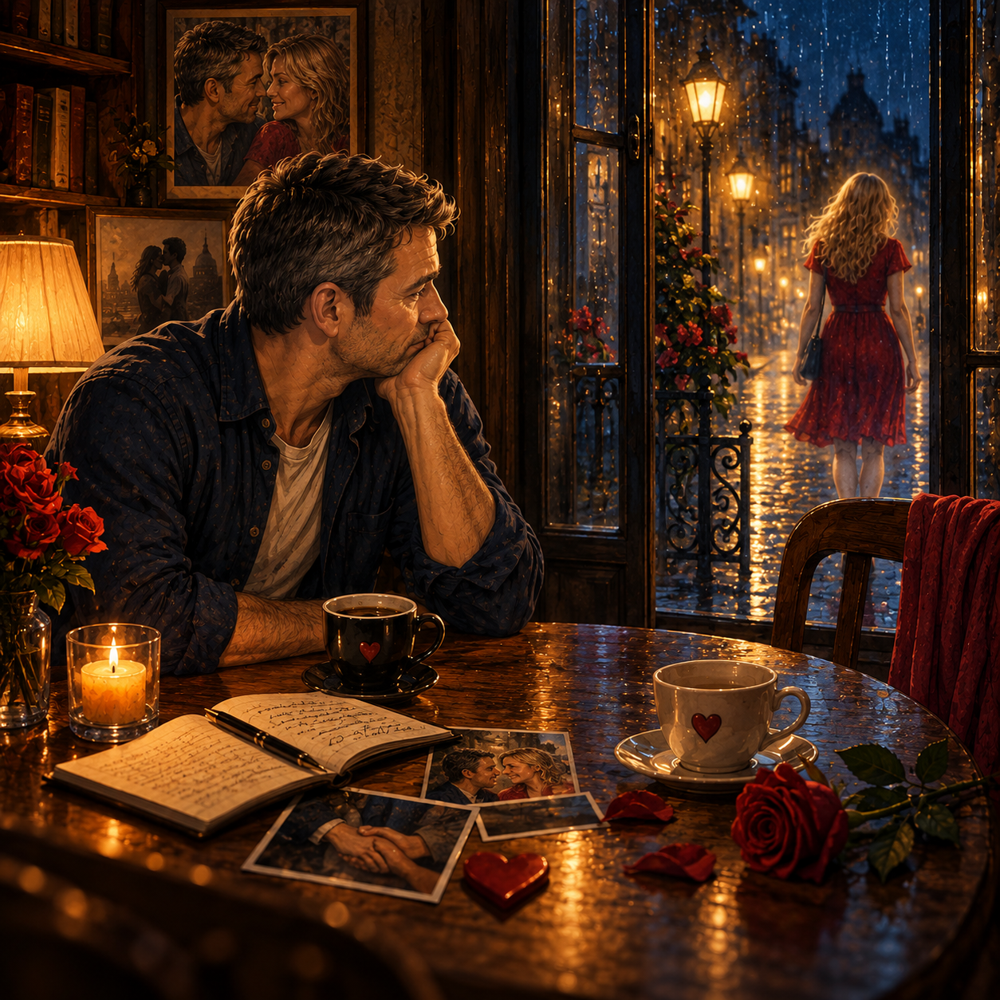

Back to where we started,
with doting pains in my broken heart
and huge tears welling up behind my eyes,
watering over forgotten lazy day-dreamed afternoons
and sorry, miserable moods,
I have naught left to do,
but grieve at the sad loss of you.
And this I do so well with floods of salty tears minute by minute,
hour by hour,
does this hurt never seems to evade
or abate me.
I hope and pray that I will be released from the pain of your absence any day ...
Please soon!
I beg for this to stop!
I have no idea what our meeting was all about,
I was only every pleased to sit with you,
talk about issues in the distant past
or whatever our lively minds could ponder on
and it is true that just to sit in silence,
holding hands,
kissing,
licking,
touching,
all your beautiful features is all I needed to feel true bliss.
With joy leaping around my mind and body,
an emotional connection which seemed an easy expression from me to you,
and my love of seeing your watery, glassy, classy eyes well up,
with a touching response to my life stories,
my dedicated poetry for you,
and my set worship of you.
Then like a bolt of lighting I am struck dumb and numb for you,
like there is nothing in life of more import than just to relax with you.
And all my thoughts, feelings and future dreams are held captive by you as my centre piece,
a jig-saw puzzle,
wrapped in a mysterious women,
which I reckon could take a lifetime or two to love and satisfy,
and like-a-virgin do I discover the elation of an emotional orgasm,
never experienced before and unique is the intensity,
so exciting,
and delightfully overwhelming.
I image you in my minds eye all the time,
in situations we have found ourselves in,
from gentle hugs and loving holds from the Karma Sutra,
impossible positions which make me blush and flush with ideas,
pleasures of a naked you,
a gratifying, sensual, experience building an excess of passionate sensations,
to an affectionate real ease.
I have too many regrets at this outcome;
so many things did not happened with you,
which leaves a massive hole in my time and space,
and my expected experience of true and unconditional love.
Aye, I suppose I need to focus on the good times,
nay, I can not imagine my time without you
and can not conceive that:
You will not text me again,
You will not call me again,
You will not meet me again,
You will not make love with me ever!
That we will,
can not,
know our ultimate union
or play around with our sublime, naughty, haughty
and playful sexual fantasies,
with your hair in a pony tail,
a horse whip in hand,
black sheen vinyl tight skirt and shirt,
and all the sexual imagery of us.
As always my words unspoken convey a passionate
and indirect message for my fair hypnotic lady,
and as I am wishing time away,
wanting again to be in your company will I ask you,
with loving caring, tender, emotional, and watery eyes:
“Is this the only way my sweet bird of desire?”